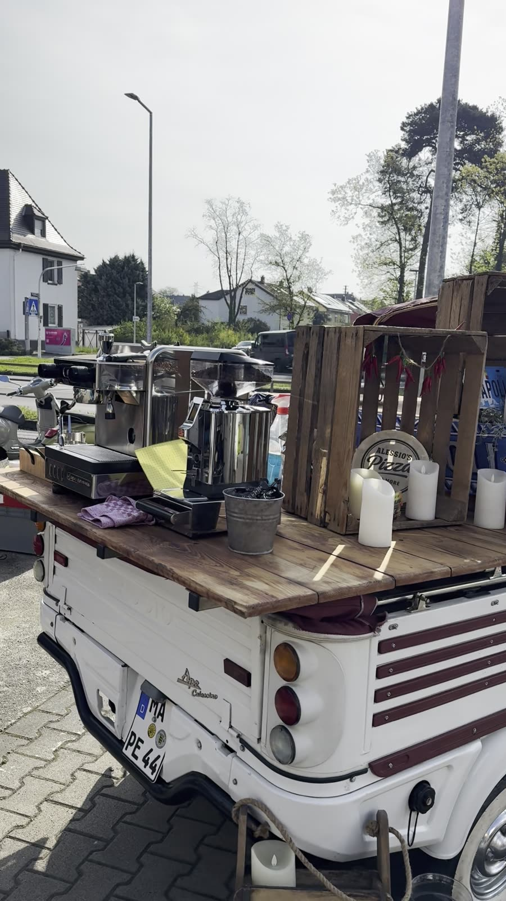

02Kaffee-Bar
Espresso, Cappuccino, Latte Macchiato, Flat White, Americano und mehr, frisch wie in einer italienischen Bar.

Echte Pizza Napoletana für Hochzeiten, Firmenfeiern und Feste, vor den Augen Ihrer Gäste gebacken. Zu Hause in Mannheim, unterwegs ohne Limit.
So, wie man sie in Neapel isst: luftiger Rand, dünne weiche Mitte und Zutaten, hinter denen eine Geschichte steht.


Die Pizza kommt aus Neapel. Wir auch.
Unsere Wurzeln reichen von Kampanien bis in die Basilikata. Die Liebe zur Stadt, zu ihrer Pizza und zu ihrem Fußball steckt in jedem Teig, den wir backen.
Jedes Angebot ist einzeln buchbar. Wählen Sie, was zu Ihrem Fest passt.
 01
01
Wir backen live vor Ort. Ihre Gäste sehen zu, wie der Teig gezogen, belegt und in 90 Sekunden gebacken wird.

02Espresso, Cappuccino, Latte Macchiato, Flat White, Americano und mehr, frisch wie in einer italienischen Bar.
 03
03
Aperol Spritz, Prosecco und Sekt, auf Wunsch alkoholfrei. Dazu Antipasti, Dolci oder Ihre eigenen Wünsche.
Wunschpizzen sind ebenfalls möglich. Informationen zu Allergenen erhalten Sie auf Anfrage und vor Ort.

Ob morgens, mittags oder abends: Sie brauchen nur eine 220-Volt-Steckdose und ebenen Untergrund.
Station und Öfen stehen, die Öfen heizen auf ca. 485 °C vor.

Von Hand gezogen und frisch belegt, direkt vor Ihren Gästen.
Pizza um Pizza aus dem Ofen, solange der Vorrat reicht.

Wir räumen alles ab und Sie feiern einfach weiter.


Pizza liegt bei uns in der Familie. Mein Vater Gennaro, den alle nur Naro nennen, steht mit Naro’s Singing Pizza seit Jahren auf Events, mit Show, Gesang und echter Pizza Napoletana.
Nach zehn Jahren an seiner Seite ist daraus mein eigenes Konzept entstanden: Alessio's Pizza and More, mit dem Fokus ganz auf der Pizza. Und wenn Sie beides möchten, treten wir auch gemeinsam auf.
Bei uns sind Sie nicht nur Kunde, sondern ein bisschen auch Teil der Famiglia.
Zu Naro’s Singing Pizza
Mehr Bilder auf Instagram: @alessiospizzaandmore
So früh wie möglich, am besten sobald Ihr Termin feststeht. Besonders an Wochenenden in der Hochzeits- und Sommersaison sind die Termine schnell vergeben. Fragen Sie trotzdem auch kurzfristig gern an, manchmal klappt es noch.
Regen ist für uns kein Problem: Wir arbeiten unter unserem Zelt bzw. Schirm und backen ganz normal weiter. Bei Sturm oder Gewitter kann es sein, dass wir kurz pausieren müssen. Und bei einem schweren Unwetter, bei dem durch Wind oder Blitz Gefahr für Gäste und Team besteht, geht die Sicherheit vor. Dann sprechen wir vor Ort gemeinsam mit Ihnen ab, wie es weitergeht.
Ja. Unsere Marinara mit Tomatensauce, Olivenöl und Basilikum ist sogar vegan. Auch die Margherita und die Bianca kommen ganz ohne Fleisch und Wurst aus.
Während Ihres Events backen wir laufend frisch nach, solange der Vorrat reicht. Die Menge stimmen wir vorab anhand Ihrer Gästezahl mit Ihnen ab.
Da sind wir offen: Es gibt keine Mindest- und keine Höchstzahl an Gästen. Ob kleine Feier im Garten oder großes Firmenevent, sprechen Sie uns einfach an.
Nur eine Steckdose mit 220 Volt und einen ebenen Untergrund. Öfen, Theke, Zutaten und Zubehör bringen wir mit, ansonsten sind wir komplett autark.
Ja. Wir bauen vor dem Event auf, backen live und räumen am Ende alles wieder ab. Sie müssen sich um nichts kümmern.
Gern. Unsere Sorten von der Karte sind fest eingeplant, Wunschpizzen sind gegen Aufpreis möglich. Sprechen Sie uns einfach darauf an.
Informationen zu Allergenen und Zusatzstoffen erhalten Sie auf Anfrage und bei uns vor Ort. Sagen Sie uns am besten schon bei der Anfrage, worauf wir achten sollen.
Zu Hause sind wir in Mannheim, unterwegs sind wir ohne Limit. Egal wohin: Fragen Sie einfach an, wir finden eine Lösung.
Ja, mein Vater und ich treten auch gemeinsam auf. Ich sorge dafür, dass alle Gäste satt werden, und Naro bringt mit Musik und Pizza die Stimmung.
Ganz einfach über das Formular unten: Datum, Ort und ungefähre Gästezahl eintragen und per E-Mail senden. Sie erhalten von uns ein persönliches, unverbindliches Angebot.